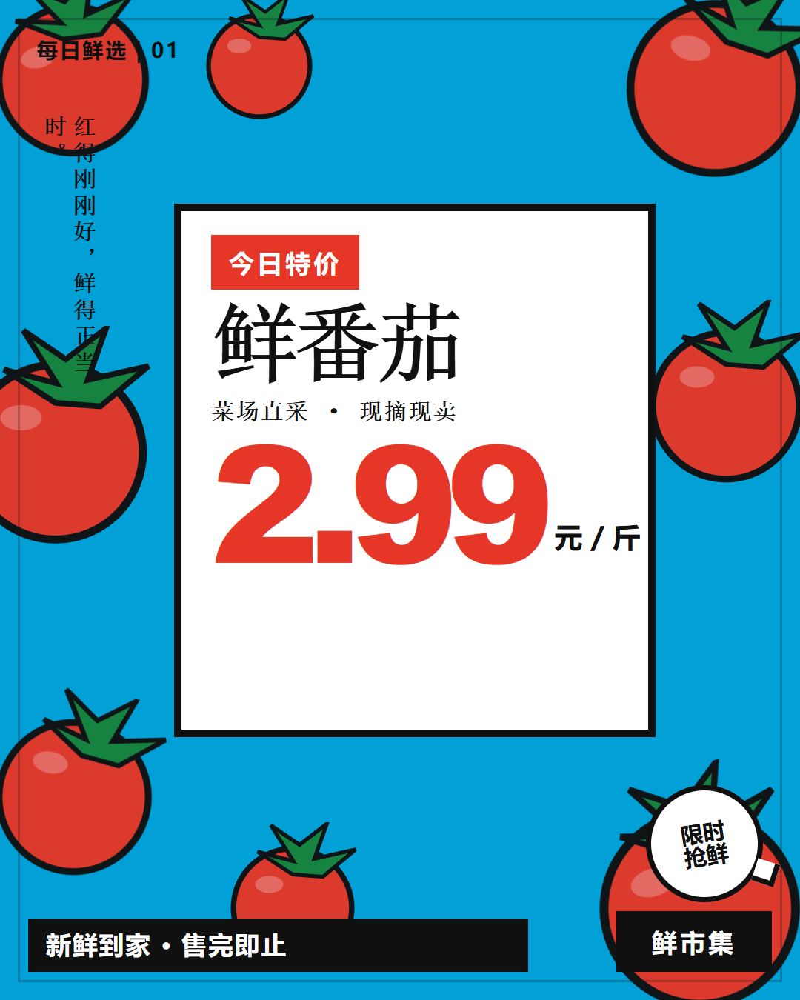

FRESH MARKET / RETAIL
新鲜，
一眼看见。
让促销信息有秩序，
让蔬果成为视觉主角。

FRESH MARKET / RETAIL05
PROJECT OVERVIEW / 项目概述
The project.
面对频繁更新的生鲜促销，把产品、价格和优惠信息整理为清晰的阅读顺序。用六种品类色与统一模板，兼顾单品吸引力和系列识别。
- DISCIPLINE / 方向
- 零售促销 / 系列海报
- ROLE / 负责内容
- 促销策略、系列海报、信息层级、模板系统
- DELIVERABLES / 产出
- 六版蔬果海报 / 统一信息模板
01信息层级
先看见产品，
再读懂今日好价。
以品类名称、价格与产品视觉形成第一层信息，再安排促销标签和补充说明。
01 / PRODUCT
品类识别
让产品名称与蔬果视觉成为明确的入口。
02 / PRICE
核心优惠
用突出的数字与单位建立阅读重点。
03 / DETAIL
补充信息
把鲜度、限量与门店信息放到次级位置。
02海报系列
六种颜色，
六份新鲜。
高饱和色彩区分不同蔬果，统一构图让海报在货架与电商触点保持连续识别。
03模板系统
换品、换价，
视觉顺序保持清楚。
在统一模板中更换品类色、产品符号与价格信息，让系列能够持续复用。
01 / CONSISTENCY
固定骨架
保留名称、价格、促销标签与门店信息的结构。
02 / FLEXIBILITY
更换内容
按品类替换产品、色彩和价格。
03 / REUSE
持续使用
延展到门店促销和电商传播触点。